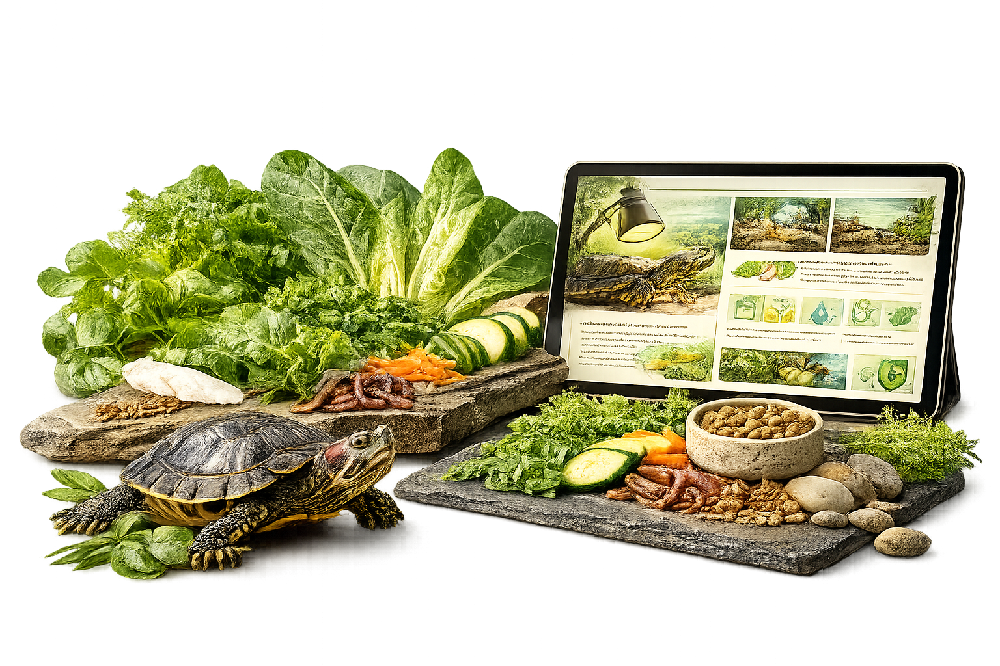

Learn what to feed your Red-Eared Slider, how often to feed it, foods to avoid and the nutrition basics every turtle parent should know.
📖 6 min read•Last Updated: July 2026

Quick Answer
A healthy Red-Eared Slider diet includes high-quality turtle pellets, dark leafy greens, safe vegetables, aquatic plants and moderate amounts of protein. Hatchlings require more protein, while adults should eat a larger proportion of plant-based foods.
Key Takeaways
Feed a varied diet instead of relying on one food.
Offer quality turtle pellets as a staple.
Adults should eat more leafy greens than hatchlings.
Avoid processed human foods and dairy products.
Remove uneaten food to keep the water clean.
Why Nutrition Matters
Nutrition is the foundation of good turtle health. A balanced diet supports healthy shell growth, strong bones, proper organ function and a healthy immune system. Many common health problems are linked to poor nutrition rather than disease.
Providing a varied, species-appropriate diet helps your turtle thrive throughout every stage of its life.
What Should a Red-Eared Slider Eat?
A healthy diet should include a variety of foods rather than relying on a single item.
High-quality turtle pellets
Dark leafy greens
Safe vegetables
Aquatic plants
Occasional fruits
Protein in moderation
Young turtles require more protein for growth, while adults should eat a higher proportion of leafy greens and vegetables.
Feeding Schedule
Age
Feeding
Hatchlings
Daily
Juveniles
Daily
Adults
Every Other Day
Foods to Avoid
Avoid feeding foods that are processed, salty or unsuitable for turtles.
Bread
Dairy products
Processed human food
Fried food
Chocolate
Salty snacks
Clean Water Is Part of Nutrition
Good nutrition doesn't stop at choosing the right food. Uneaten food quickly pollutes aquarium water, increasing harmful bacteria and affecting your turtle's health. Always remove leftovers promptly and maintain clean, filtered water.
Common Feeding Mistakes
Feeding only dried shrimp
Offering too much protein
Overfeeding because the turtle appears hungry
Giving fruit too often
Not feeding enough leafy greens
Depending on a single pellet brand
Want to Know Exactly Which Foods Are Safe?
This guide covers the basics of turtle nutrition, but many turtle parents still ask questions like:
Can turtles eat spinach?
Is cucumber safe?
Can I feed coriander?
Are bananas okay?
Which foods are toxic?
Instead of searching the internet every time, the Red-Eared Slider Food Bible gives you one trusted reference with everything organised in one place.
Turn on the UVB and basking lights, check the water temperature, and observe your turtle for normal activity.
Feeding
Feed an age-appropriate diet consisting of quality pellets, leafy greens, and occasional protein treats. Remove uneaten food if necessary to maintain water quality.
Cleaning
Remove visible waste daily and perform partial water changes as required. Rinse filter media only in old tank water to preserve beneficial bacteria.
Weekly Checks
Inspect the shell, eyes, skin, nails, filter, heater, and UVB light. Early detection of problems makes treatment much easier.
Frequently Asked Questions
Can a Red-Eared Slider really live for 40 years?
Yes. With excellent care, many Red-Eared Sliders live well beyond 30 years, and some reach or exceed 40 years.
What is the biggest reason pet turtles die early?
Poor husbandry is the most common cause. Dirty water, lack of UVB lighting, incorrect diet, and inadequate basking conditions can lead to chronic health problems.
Do larger tanks help turtles live longer?
A larger aquarium provides better swimming space, more stable water quality, and reduces stress. While tank size alone doesn't increase lifespan, it supports better overall health.
Can I keep my turtle without a filter?
No. Red-Eared Sliders produce a large amount of waste. A powerful filter is essential to maintain clean, healthy water.